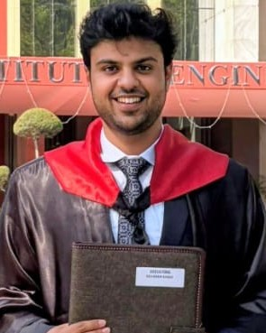

Devansh Singh
AI Engineer · Researcher · Musician
01 — About Me
I'm a Computer Science graduate from Thapar Institute of Engineering and Technology, currently working at the intersection of AI research and scalable software engineering. From Cambridge to Razorpay to Samsung R&D, I build systems that bridge theoretical innovation and real-world impact.
My work spans Vision-Language Models, social robotics, automated compliance systems, and time-series modeling. When I'm not training models or shipping production APIs, I'm usually strumming my guitar or organizing community events.
Quick Stats
3
Publications
5+
Internships
8.83
CGPA